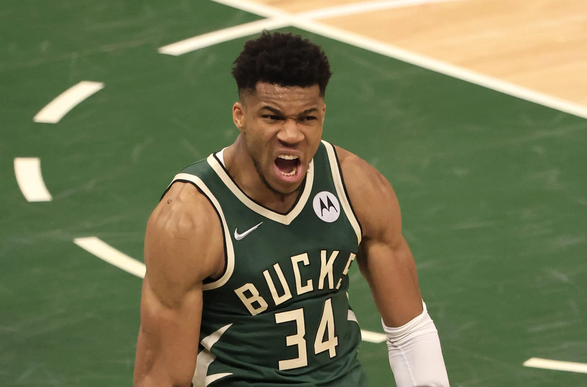

|
Giannis Antetokounmpo, conocido como "The Greek Freak", es un jugador griego de baloncesto que juega en la NBA para los Milwaukee Bucks. Destaca por su impresionante combinación de tamaño, velocidad y habilidades técnicas, lo que lo convierte en uno de los jugadores más versátiles y dominantes de la liga. Ha ganado múltiples premios MVP y llevó a su equipo a ganar el campeonato de la NBA en 2021.
menu principal
|

 GIANNIS ANTETOKOUNMPO
GIANNIS ANTETOKOUNMPO